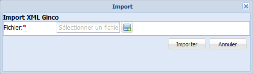

Import d'un vocabulaire complet
ProcédureImporter un vocabulaire⚓
Vous avez enregistré, sur votre disque dur, un vocabulaire (au format SKOS[1] ou au format XML GINCO (issu d'un export de vocabulaire depuis une application Ginco)).
Cliquez sur le bouton
Importsdu cadreAdministration, en haut de l'application.Un menu déroulant s'affiche.
Sélectionnez le type de fichier (
Import SKOSouImport XML GINCO) que vous souhaitez importer.La fenêtre
Imports'affiche.
Cliquez sur le bouton
 pour sélectionner le fichier à importer.
pour sélectionner le fichier à importer.Une fenêtre d'exploration de votre disque dur s'affiche.
Parcourez votre espace de stockage jusqu'au fichier à importer et sélectionnez-le par un double-clic.
Cliquez sur le bouton
Importerde la fenêtreImport.Le vocabulaire est importé. Un dossier correspondant à ce vocabulaire est automatiquement ajouté dans l'explorateur de vocabulaires Ginco.
RemarqueRemarque⚓
En cas de problème lors de l'import, un message d'erreur s'affiche.
Il peut s'agir d'un format de fichier non reconnu, d'un vocabulaire comportant des doublons, d'une langue inconnue qu'il faudra préalablement déclarer dans le fichier de paramétrage des langues,...